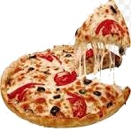

Présentation
Notre pizzeria Délicatus a ouvert ses portes en aout 2016. Située sur la commune d’Yvrac, face à intermarché, nous vous invitons à venir déguster une pizza authentique et savoureuse dans un cadre chaleureux et convivial où notre équipe vous apportera toute l’attention souhaitée durant votre visite du lundi au dimanche. Notre salle de restaurant au sein de la pizzeria Délicatus à une capacité de vingt trois couverts ainsi qu’une terrasse couverte et qui elle-même peut acceuillir dix huit convives. Nous vous invitons sans hésiter à réserver dès maintenant votre table ou bien même votre pizza à emporter. Fort d’une experience acquise lors d’une formation en école de pizzaïolo, de grandes notoriétées, géré par un maitre reconnu et plusieurs fois titré. Cela nous a permis de mettre en place une recette de pâte à pizza ancestrale à l’aide de farine italienne, ce qui lui confère un gout et une texture légère. Travaillée à la main avec des produits frais et de producteurs locaux, cela en fait une pizza d’exception. Vous trouverez aussi à la carte des tagliatelles fraiches dans plusieurs déclinaisons telles que ; poulet, carbonara, saumon frais, Bolognaise ou Bolognaise italienne, fromages, ainsi que des salades composées isues de producteurs locaux. Riche de connaissances, nous avons tenu à rester sur une gamme d’excellence afin de vous proposer une carte de bières belge fines et savoureuses aussi bien à la pression qu’en bouteille telles que la cuvée des trolls, la rince cochon, la tripel karmeliet et la queue de charrue à la pression. Tout en sachant que l’abus d’alcool est dangeureux pour la santé et que tout cela reste à déguster avec modération. Toujours dans le but de proposer des produits de qualités, pour les sodas, notre choix s’est aussi portés sur des limonades italiennes au gout subtil et à la bulle fine qui ne manquera pas de vous surprendre. Notre équipe au sein de la pizzeria Délicatus vous attend afin de passer un moment culinaire inoubliable.